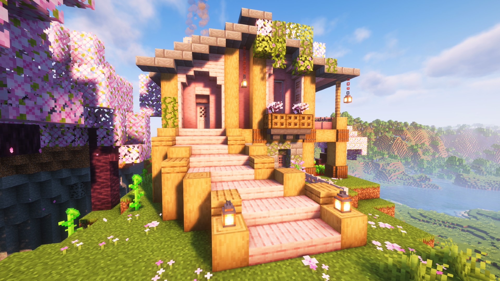
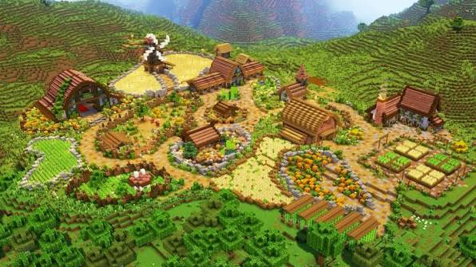

My Starter Base in the Cherry Grove
September 23, 2026 by Rihanna White

When I first spawned in, I found a cherry grove on a hilltop and knew right away that this was where I wanted to live. The pink cherry wood and blossoming trees gave the whole area a calm, dreamy look, so I built my first house to match, using cherry planks for the walls and a soft tiled roof on top.
My favourite part is the wide staircase leading up to the front door, with lanterns on either side to light the way at night. I also added a little balcony with flowers and some vines on the roof so the house feels like it belongs to the hill. From the top, I can look out over the valley and the lake below, which makes it a great place to start every adventure.
Building My Main Base: A Farming Village
October 3, 2026 by Rihanna White

After a few weeks of survival, my starter house was getting crowded, so I decided to build a proper main base down in the valley. Instead of one big building, I planned a small village with winding dirt paths, a windmill, cottages with wooden roofs and lots of space for farming.
The fields are the heart of the base. I have wheat, pumpkins, flowers and small garden plots, each one surrounded by stone borders to keep things organised. The surrounding hills and forest protect the village and give me plenty of wood and resources. Next, I want to add animal pens and an automatic farm so the village can run by itself.